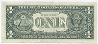

TOC
1 Amercian Money
1.1 coin
| denomination | 正面 | 反面 | 名称 |
| 1 | Abraham Lincoln | Union Shield | penny cent |
| 5 | Thomas Jefferson | Monticello | nickel |
| 10 | Franklin Roosevelt | olive branch | dime |
| 25 | George Washington | America the Beautiful Quarters | quarter |
| 50 | John Kennedy | Independence Hall | half dollar/piece/50-cent |
| 100=$1 | Sacagawea | Native Amercian Themes | dollar/gold(en) |
1.2 bill
$1
口语中叫: buck/bill/single/one
Obverse: George Washington
Reverse: Great Seal of the United States

$2
Obverse: Thomas Jefferson
Reverse: Trumbull's Declaration of Independence
$5
Obverse: Abraham Lincoln

Reverse: Lincoln Memorial

$10
Obverse: Alexander Hamilton

Reverse: US Treasury

$20
Obverse: Andrew Jackson

Reverse: White House

$50
Obverse: Ulysses S. Grant

Reverse: US Capitol
 $100
$100
Obverse: Benjamin Franklin

Reverse: Independence Hall

2 England Money
2.1 penny
[pl]pence
便士
人们经常说 pee 而不说penny: 50 pee
2.2 pound
英磅
100 pence 口语中使用 =quid 来代替 pound, 例如: one pound = A QUID, five pound = Five QUID
2.3 current coins
1 penny
2 pence
5 pence
10 pence
20 pence
50 pence
1 pound
又叫 smacker/smackeroon

2 pounds
2.4 current bank notes
正面是HM(his/her majesty)女王的头像 Queen Elizabeth 2,背面是一位知名的历史人物.
5 pounds
又叫 fiver
正面
反面: Elizabeth Fry

10 pounds
又叫 tenner
正面
反面:Charles Darwin 达尔文
20 pounds
正面
反面: Sir Edward Elgar
50 pounds
正面
反面: Sir John Houblon
2.5 sterling
英国货币
2.6 denomination
nominate (v)提名 -> nominee (n)被提名的人
denominate (v)为…命名
denomination (n) 面额 名称